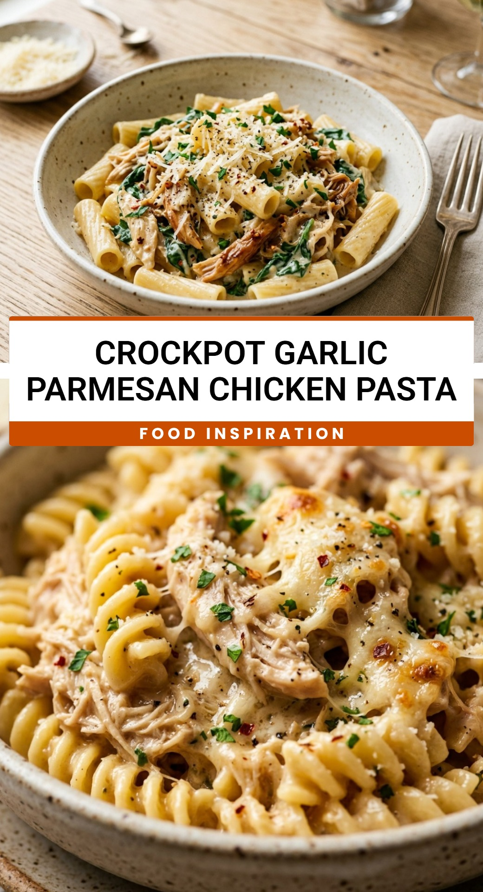

Crockpot Garlic Parmesan Chicken Pasta
October 1, 2026

Imagine walking into your home after a long day and being greeted by the mouthwatering aroma of savory garlic and melted cheese. This Crockpot Garlic Parmesan Chicken Pasta is the ultimate “set it and forget it” comfort meal. It takes the stress out of dinner time while delivering a rich, creamy, and satisfying dish that tastes like it came from a high-end Italian bistro.
Recipe Information
Prep Time: 10 minutes
Cook Time: 4 hours
Total Time: 4 hours 10 minutes
Servings: 6
Difficulty Level: Easy
Nutrition Information
Calories per serving: 545 kcal
Protein: 34g
Carbohydrates: 46g
Fat: 25g
Fiber: 2g
Sugar: 5g
Sodium: 890mg